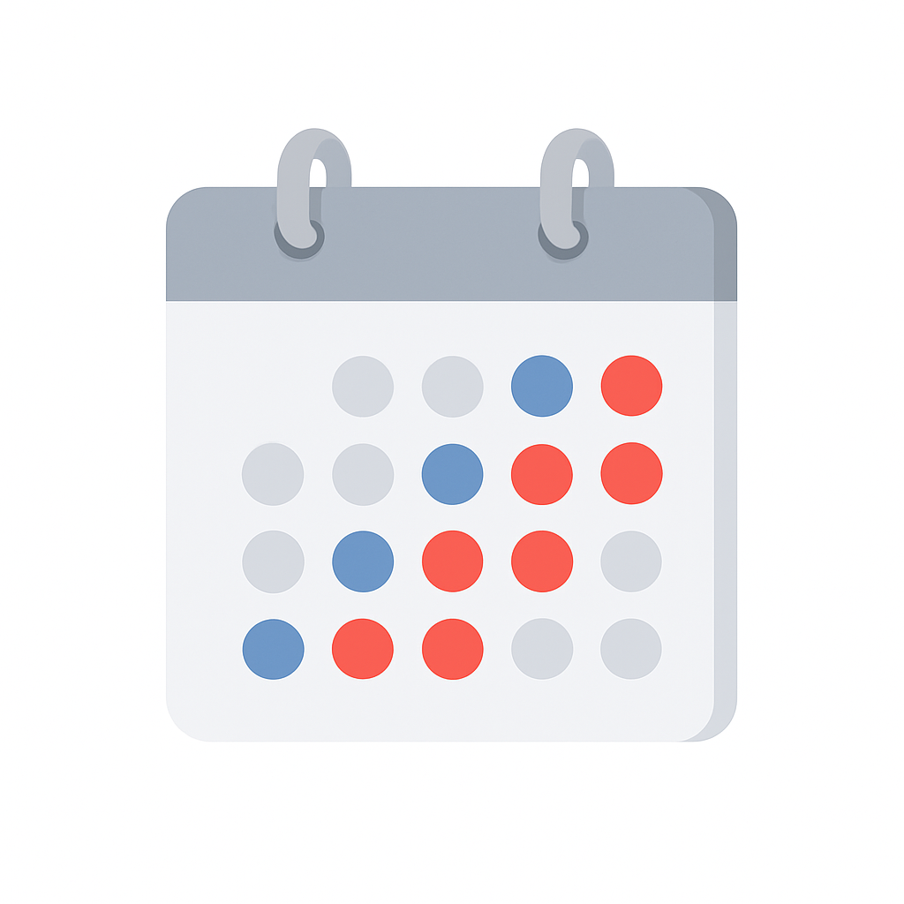

Цифровой юрист
Персонализированные документы и планы
(ИИ-помощник с учетом законодательства)
Развод — просто, спокойно, с поддержкой
Мы помогаем пройти через развод без лишнего стресса. Подготовим юридические документы, предоставим консультации медиаторов, юристов и психологов.
О сервисе
Сервис предлагает комплексную поддержку до, во время и после развода — полностью онлайн. Мы объединяем юридическую, психологическую и финансовую помощь, чтобы вы могли пройти через процесс спокойно и уверенно.
Юристы и медиаторы
Онлайн-консультации по вашей ситуации с
учетом всех деталей
Онлайн-консультации по вашей ситуации с
учетом всех деталей
Финансовые и ипотечные консультанты
Онлайн-поддержка при разделении бюджета
и кредитных обязательств
Онлайн-поддержка при разделении бюджета
и кредитных обязательств
Психологи для родителей и детей
Онлайн-сессии для взрослых, поддержка
детей во время развода
Онлайн-сессии для взрослых, поддержка
детей во время развода

Программы по реабилитации
Эмоциональное и физическое
восстановление, новые цели
Эмоциональное и физическое
восстановление, новые цели
Календарь родителя
Совместное воспитание, учёт расходов,
защищённая переписка
Совместное воспитание, учёт расходов,
защищённая переписка

Доступные услуги
Выберите нужный документ — и получите персональное решение под вашу ситуацию. Наш цифровой юрист подготовит юридически корректный текст на основе вашей истории, действующего законодательства и судебной практики. Все документы можно проверить, отредактировать и сохранить для подачи в суд.
Кроме того, вы получите пошаговые инструкции по всем этапам развода: как подать документы, что говорить в суде, какие права есть у вас и у второй стороны, как защитить интересы ребёнка и разделить имущество.
Заявление о взыскании алиментов
Автоматически сформированное заявление с учётом вашего дохода, количества детей, судебной практики и конкретной ситуации. Подходит для подачи в мировой суд.
Исковое заявление о разводе
Подходит для самостоятельной подачи, даже если одна из сторон не согласна. Цифровой юрист поможет с формулировкой оснований, сроков и рекомендациями по подаче.
Раздел совместно нажитого имущества
Документ с учётом имущественных прав, долей, кредитных обязательств. Возможность выбора: исковое заявление или добровольное соглашение.
Соглашение о детях и алиментах
Фиксирует договоренности родителей о проживании ребёнка, алиментах, графике общения. Подходит для заверения в суде или у нотариуса.
Записаться на консультацию
Выберите специалиста — юриста, медиатора или психолога. Онлайн-встреча поможет разобраться в ситуации и выбрать грамотную стратегию действий.
Наши ценности
Мы верим, что развод — это не конец семьи, а возможность её переосмыслить и сохранить уважение друг к другу. Сервис создан для того, чтобы помочь преодолеть наиболее болезненные аспекты расставания:
- 40% женщин боятся, что у них могут отобрать детей
- 60–70% не знают своих прав и обязанностей в процессе развода
- 70–80% пар испытывают трудности в коммуникации
Мы поможем это исправить — понятные инструкции, поддержка экспертов и цифровые инструменты помогут вам сохранить контроль, спокойствие и уважение.